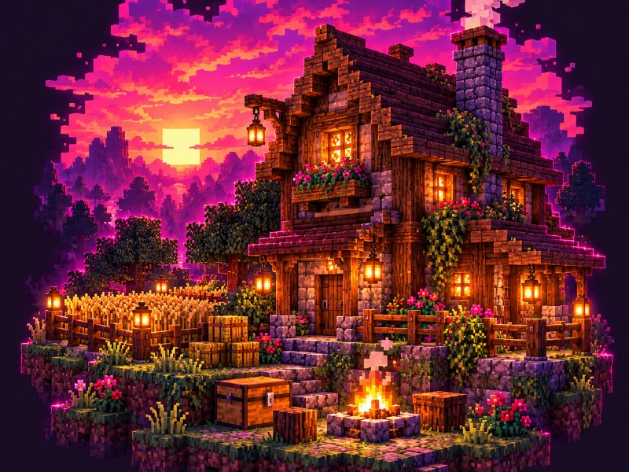
Zbuduj coś swojego
Zbieraj surowce, rozwijaj bazę, zdobywaj Soczki i znajdź swoje miejsce na mapie.
Poznaj survivalNowa przygoda zaczyna się tutaj
MINECRAFT JAVA • BEZ PREMIUMBuduj, handluj, odkrywaj i ruszaj do Jaskiń po łupy. JuicyCraft to Minecraft, w którym zawsze jest coś do zrobienia — najlepiej razem.
Przygotowujemy świat
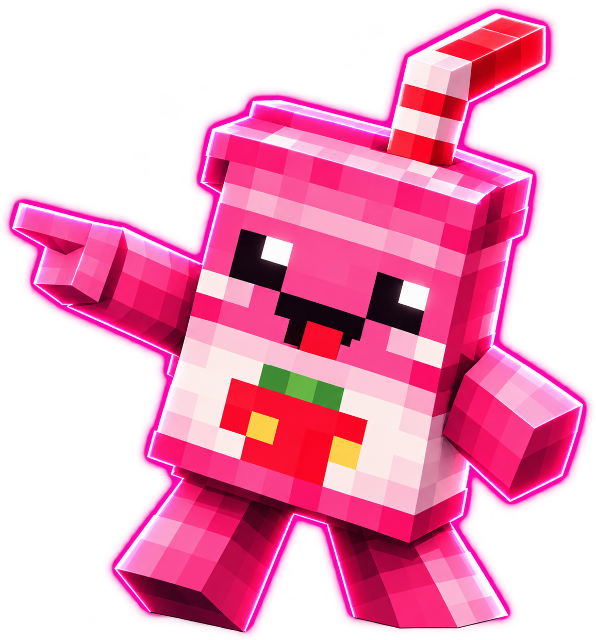
01 / Odkrywaj
Tu sam wybierasz, jak wygląda Twoja przygoda.

Zbieraj surowce, rozwijaj bazę, zdobywaj Soczki i znajdź swoje miejsce na mapie.
Poznaj survival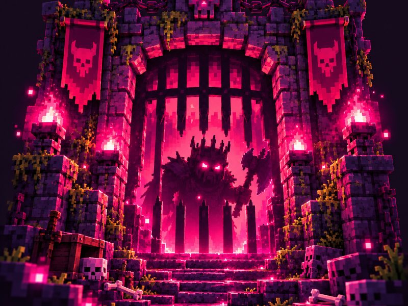
Do czterech graczy, pięć klas i przeciwnicy, którzy nie oddadzą łupów za darmo.
Odkryj Jaskinie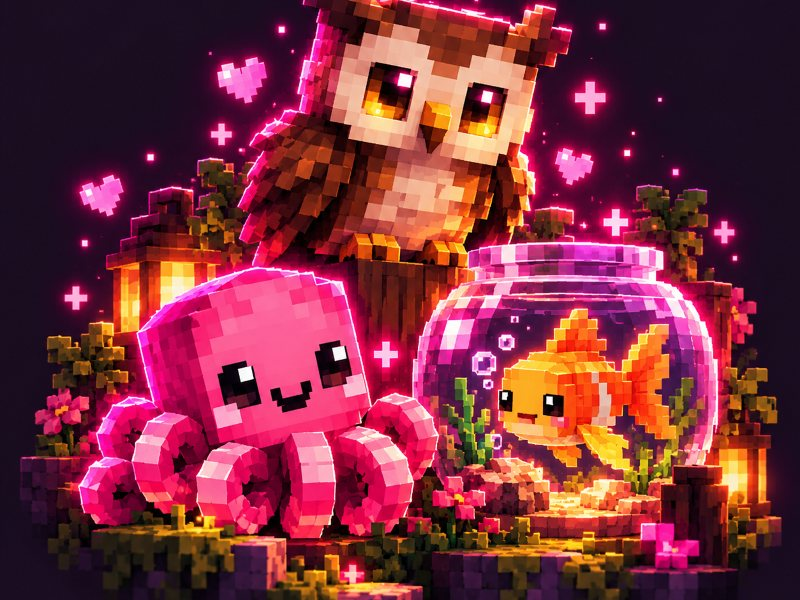
Pety, czapki, skrzydła i baloniki, które dodają stylu, a nie przewagi w walce.
Zobacz dodatki02 / Wyprawy
Pod powierzchnią czekają Jaskinie — wyprawy dla drużyn do 4 graczy. Wybierz klasę, połącz siły i zmierz się z goblinami oraz ich Wodzem.
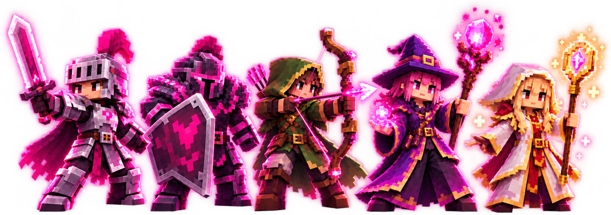
Pierwszy do starcia.
Tarcza całej drużyny.
Celność z dystansu.
Magia robi różnicę.
Wsparcie, którego potrzebuje ekipa.
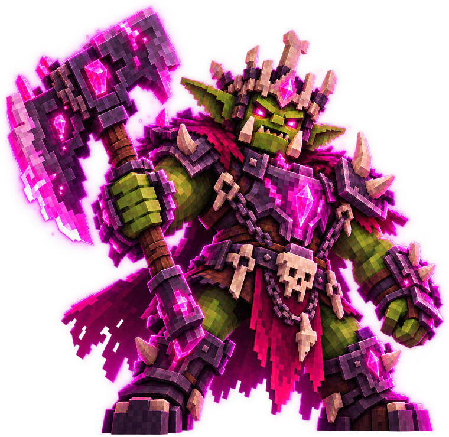
Boss
Trzy fazy walki, pomocnicy i skarbiec na końcu wyprawy. Co tydzień inna mutacja, która miesza w taktyce.
03 / Ekonomia
Pracuj, handluj i rozwijaj swoje miejsce w świecie JuicyCraft. Gospodarka kręci się wokół Soczków — naszej serwerowej waluty.
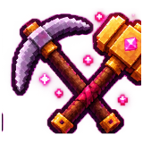
Zarabiaj na tym, co lubisz robić.
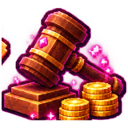
Kupuj i sprzedawaj po swojemu.
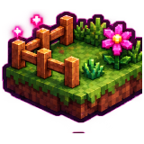
Zbuduj miejsce, które będzie Twoje — i chronione.
04 / Szybki start
Grasz bez premium? Też możesz dołączyć.
Działa na aktualnej wersji gry i na starszych wersjach.
Gra wieloosobowa → Dodaj serwer i wpisz juicycraft.pl.
Zaakceptuj paczkę zasobów, załóż hasło (bez premium) i wybierz świat u NPC na spawnie.

05 / Odkryj świat
Osady, budowle i miejsca warte odwiedzenia. Odkryj JuicyCraft z lotu ptaka, zanim wyruszysz w drogę.
Mapa aktualizuje się wraz ze światem. Nie wszystkie obszary muszą być jeszcze widoczne.
06 / Społeczność
Aktualizacje, wydarzenia i ważne informacje prosto z naszej społeczności.
Wczytywanie…
07 / Sklep
Rangi, pety i kosmetyki znajdziesz w oficjalnym sklepie JuicyCraft.
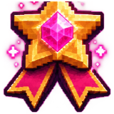
JUICY, JUICY+ i JUICY++ — wybierz rangę dla siebie.
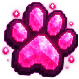
Niech mały kompan ruszy z Tobą.
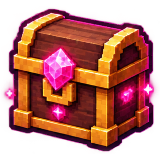
Czapki, skrzydła, plecaki i baloniki — dopracuj swój wygląd.
✦ Pety i kosmetyki są wyłącznie wizualne — bez przewagi w rozgrywce. Zakupy obsługuje Tebex.
JUICYSUZI • KICK
JuicySuzi streamuje na Kicku, tworzy społeczność i zaprasza Was do wspólnych przygód na JuicyCraft.
08 / FAQ
Uruchom Minecraft Java Edition, dodaj nowy serwer i wpisz juicycraft.pl.
Nie. JuicyCraft umożliwia również grę bez premium — przy pierwszym wejściu założysz hasło do swojego nicku. Gracze premium wchodzą bez hasła.
30 października 2026 o godzinie 18:00 czasu polskiego.
JuicyCraft jest serwerem Java Edition. Dostęp z Bedrocka (telefon, konsole) nie jest obecnie dostępny.
Tak, ale nie musisz nic instalować ręcznie — serwer zaproponuje ją przy wejściu, wystarczy kliknąć „Tak”. Bez niej nie zobaczysz petów, czapek i broni z Jaskiń.
To waluta JuicyCraft. Zdobywasz je za pracę, handel, zadania, głosowanie i grę. Swoje Soczki sprawdzisz komendą /soczki.